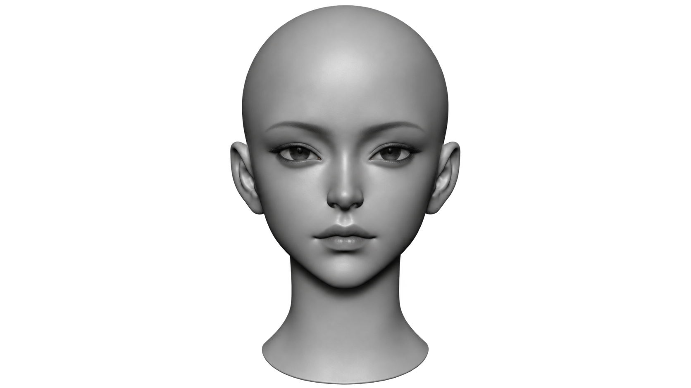
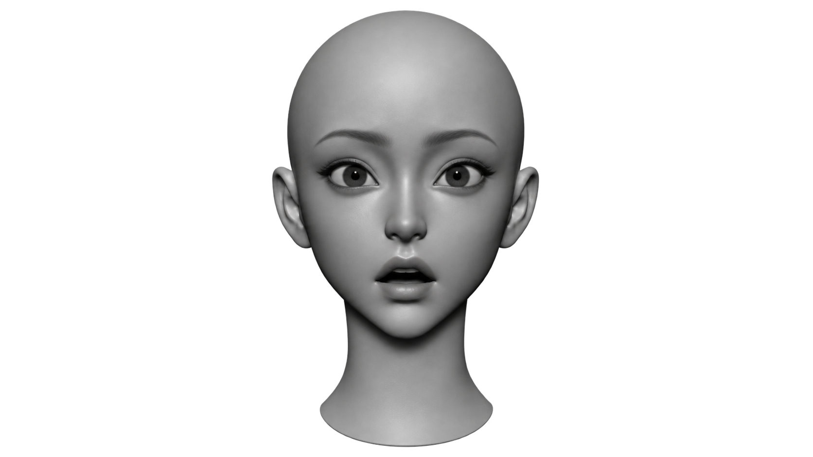
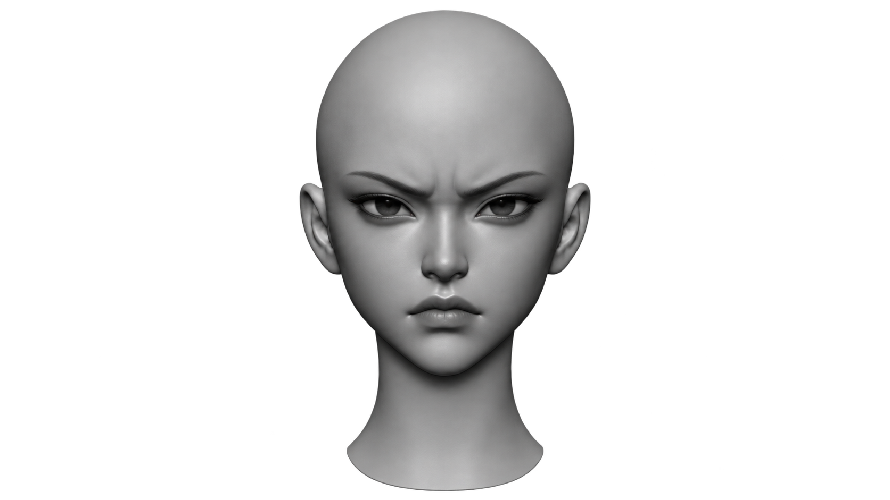
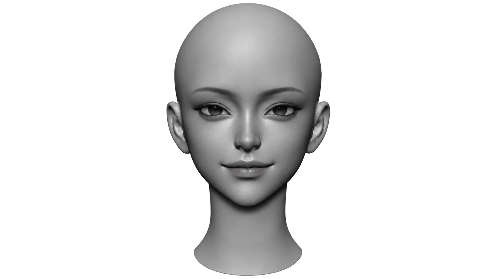

01 / EAR — CONVERSATION




상대의 말
어제 답장을 놓친 친구와의 대화 · 약 1–2분대화는 준비하는 것이 아니라, 순간적으로 반응하는 것이다.
대본 곳곳에 시선 처리, 손짓, 목소리 고조, 멈춤(Pause) 등의 이모지 제스처 태그를 배치하여 직관적인 스피치를 연습합니다.
메시지 전달에서 **말의 내용(7%)**보다 **시각적 요소(몸짓, 눈빛 55%)**와 **청각적 요소(목소리 톤, 억양 38%)**가 설득력에 훨씬 결정적인 영향을 미칩니다. 핵심 단어를 말하기 직전 **2초간 멈춤(Pause)**을 주면 대중의 시선이 집중됩니다.
[상황 → 감정 → 이유 → 요청] 4단계에 직접 내용을 적어 전하고 싶은 메시지를 완성합니다.
무슨 일이 있었나요? 감정을 빼고 사실부터 적어주세요.
그 일로 어떤 마음이 들었나요? 내 감정을 솔직하게 표현해주세요.
왜 이런 상황이 생겼나요? 상대가 이해할 수 있게 배경을 알려주세요.
상대에게 무엇을 부탁하고 싶나요? 구체적인 행동을 적어주세요.